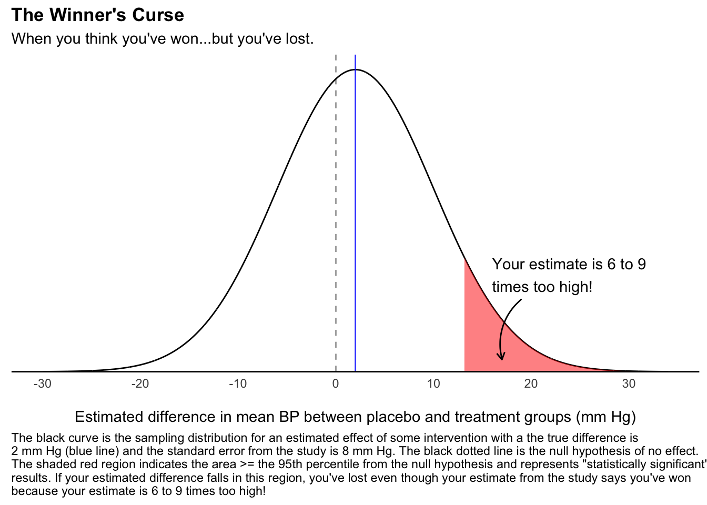

The Winner’s Curse
Losing while winning
Statistics & Heuristics
That fuzzy feeling
When reading a study, have you ever found yourself skeptical of the “statistically significant” findings for reasons you can’t quite identify? You’ve read the methods section, and it seems technically sound. The study question was interesting, the alternative hypothesis was plausible, the variables were sensibly chosen, the data was collected appropriately for the type of study with no apparent selection bias, and the statistical analysis was thoughtfully performed and interpreted with great care to not overgeneralize the findings. Despite all of the study’s virtues, the low buzz of skepticism continued to rumble in the back of your mind. Where does this skepticism come from?
It may be that you have an intuitive grasp of an inherent problem with significance testing that makes inconsequential findings seem impressive. Filtering results based on significance testing can induce a bias that inflates effect sizes, even if the study itself is conducted according to the highest standards of rigor. This overconfidence can produce large, publishable findings that will never replicate in follow-up investigations. This phenomenon is called “The Winner’s Curse”, which takes its name from the finding that winners of auctions tend to overpay for their winnings. Even if you are a thoughtful researcher who cares about replicability, you can sill lose when you think you’ve won due to the possible overconfidence induced by significance testing.
Let’s look at an example to build intuition about when a finding may be at risk from suffering The Winner’s Curse.
This example is taken from Andrew Gelman’s and colleagues’ wonderful book Regression and Other Stories. For a different take on a similar phenomenom, see Gelman’s blog. For a more technical treatment of the subject, see this paper.
Losing while winning
Suppose I conduct a study looking at a blood pressure lowering medicine in kids less than 3 years old. I’ll run a randomized, double-blind, placebo controlled trial and look at the difference of means of the two groups. I’m only interested in the medicine’s ability to lower blood pressure, so I plan to do a 1-sided t-test for the hypothesis that the placebo group’s blood pressure minus the treatment group’s is greater than 0 (i.e. treatment lowers blood pressure) and test for significance at the \(\alpha = 0.05\) level.
Since we have omniscient control of this fake study, suppose the true effect of the medicine will on average lower the blood pressure by 2 mm Hg. So, in reality the treatment “works” even if the effect is small. In the real world the null hypothesis of no association should be rejected since we know the true effect of the treatment is different than the placebo. Crucially, suppose I won’t care that the children scream bloody murder half the time I try to measure the blood pressure (the joys of pediatrics) and will accept whatever readings I get. No one’s got time to try to convince a 2-year-old that blood pressure machines aren’t scary. I anticipate that the standard deviation will be rather large in both groups.
Still in statistician god-mode, let’s suppose under these conditions with the sample size and the variability of the data, the standard error of the mean for this study will be 8 mm Hg.
Now the central questions: given the true effect of 2 mm Hg and the study standard error of 8 mm Hg, how large of an effect will we need to estimate to reject the null hypothesis? Let’s look at the following figure to find out.
The black curve in the figure is the sampling distribution for the estimated difference in means between the placebo and treatment groups. This is the curve we would get if we ran the exact same study 10,000 times with different samples from the same population and calculated the average difference between the groups each time. Since we can’t do this is in real life, I simulated it on my computer. The true difference that we set is 2 mm Hg (blue line) and the standard error from the study is 8 mm Hg, which is why the curve is so spread out. Since the kids scream half the time the blood pressure is measured, the difference in means can vary from one simulation to the next. This is why some studies could give us a negative effect estimate (i.e. the treatment raises blood pressure) or why the size of the effect estimate could be much larger than 2 mm Hg. In fact, the shaded red region starting at 12 mm Hg represents the estimates at or greater than the 95th percentile of all possible estimates if the null hypothesis was true. This area represents “statistically significant” results and comprises 8% of possible studies. In other words, there is an 8%, or roughly 1 in 12, chance my study estimates an effect size in this region.
Suppose I complete this study and get very excited because I got an average difference of 16 mm Hg (p = 0.04)! I’ll publish the finding straight away in the fanciest journal I can find. Why is this a problem? If we take an average difference of 16 mm Hg as the effect size, then it is 8 times larger than the real effect of 2 mm Hg and in reality this impressive looking finding is clinically meaningless! Lowering the blood pressure by 16 mm Hg for a 3 year old can be the difference between severe hypertension and a safe level, but lowering it by 2 mm Hg doesn’t mean much at all.
This finding also won’t replicate on follow-up investigations. Or even worse it will replicate in a way that reifies the inflated estimates. Suppose 12 similar follow-up studies were done, then it’s likely 1 of the other 12 will also give “significant” findings of effect. It’s possible that, due to publication bias, only the two significant studies are published, or at least published in a journal of note. One can read the literature and then conclude that these two technically sound studies that each giving similar effect estimates must represent good evidence of meaningful effect!
Avoiding the Curse
The Winner’s Curse can cause the size of “statistically significant” effect estimates to be inflated and can turn meaningless true differences into meaningful-but-false-but-publishable findings. A study is more at risk of suffering from a Winner’s Curse when the true effect size is small or the variability of the outcome variable is large. If you work in or read the literature from a field where effect sizes are small and/or measurement error is large, such as psychology, sociology, political science, or epidemiology, then you should take note of this danger!
To look for markings of the Curse, first think about how precisely can the outcome of interest be measured. Can it be measured precisely like a physics experiment? Or is there expected noise in the measurement, like measuring blood pressure in a screaming 2-year-old? If the outcome tends toward the imprecise range of the spectrum, the Curse is more likely. Also estimate for yourself a range of plausible effect sizes from the intervention being studied. If you think most plausible effect estimates are small, again the Curse is more likely. Finally think about how large is the possible measurement error compared to the true effect. If the supposed measurement error is many times larger than the plausible true effect size (like 8:2 in our example), the Winner’s Curse is going to haunt any of your “significant” findings.